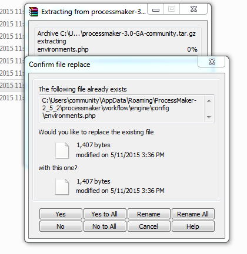
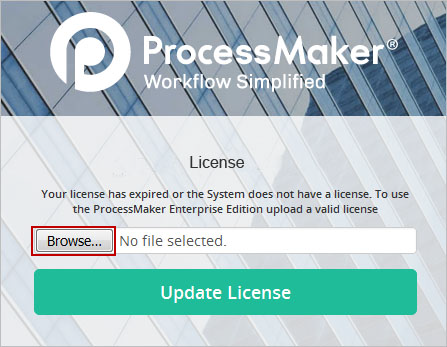
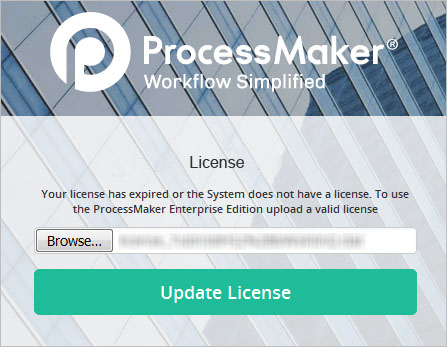

- Overview
- Requirements
- Upgrading from a Community to an Enterprise Edition
- Safety Precautions Before Upgrading
- Upgrading ProcessMaker
- Step 1: Backing up ProcessMaker
- Step 2: Updating the Content Table
- Step 3: Upgrading the Source Code
- Step 4: Modifying my.cnf file
- Step 5: Upgrading the Workspaces
- Step 6: Changing the Apache Configuration
- Step 7: Upgrade the Databases
- Step 8: Migrating the List of Cases
- Additional Configurations
- After Upgrading
- Activating the License
- Restoring ProcessMaker if Problems Arise
Overview
This document is a detailed guide to upgrading to ProcessMaker 3.3. The structure of the databases and the file locations may be changed from one version of ProcessMaker to the next, so do NOT try to use data from one version of ProcessMaker in a different version of ProcessMaker without first following the upgrade procedure.
Note: To follow quick steps to upgrade your Processmaker installation to ProcessMaker 3.3 and later, please read the ProcessMaker Upgrade Plan page.
The upgrade procedure will update the processes and data to the new version. However, take the following considerations into account once the upgrade is completed:
About old processes:
- Classic processes (created in the old designer in ProcessMaker 2) can be used in version 3.3, but they will not be converted into BPMN processes. The only way to convert a classic process to a BPMN process is to manually recreate it in the new BPMN designer from scratch.
- After upgrading to version 3.3, classic processes will automatically be opened in the old designer and they will work as expected, meaning that information related to users and cases won't be modified.
- Classic processes that have been upgraded to version 3.3 can still be edited in the classic designer and cases can be executed. However, it is not possible to create new classic processes in version 3.3. Instead, all new processes will need to be created using the BPMN Designer.
- The case list will show both cases created by classic processes and new BPMN processes, maintaining their numbering.
About old Dynaforms:
- Old Dynaforms cannot be converted into the new responsive forms. Instead, they will keep their old structure from the classic designer.
Requirements
- See the requirements for ProcessMaker 3.3 and install one of the official stacks before the upgrade.
- ProcessMaker version 3.3 or later requires PHP 5.6 or PHP 7.1 in Linux and Windows.
- If using an older version of PHP, make sure to upgrade PHP before upgrading ProcessMaker.
Upgrading from a Community to an Enterprise Edition
This guide can also be used to upgrade ProcessMaker from a Community to an Enterprise edition. Don't forget that a license is required to use the Enterprise Edition. For more information, see activating the Enterprise license.
Safety Precautions Before Upgrading
The blacklist.ini file (used by the Code Security Scanner) is autogenerated during the upgrade process. If a customized blacklist is currently being used, take care to back up the file before starting the update process.
If using ProcessMaker in production, before upgrading ProcessMaker it is recommended to first install the new version of ProcessMaker on a separate test server (or in a separate port or domain on the same server) and import your processes onto the test server to verify that there are no incompatibilities.
Upgrading ProcessMaker
Step 1: Backing up ProcessMaker
Before upgrading, always make a complete backup of the directory where ProcessMaker is installed and of the database(s) used by each workspace, so if an error arises, it will be possible to go back to the previous version of ProcessMaker and restore its data.
Follow the steps below according to your operating system:
Linux/UNIX
-
Make an archive of the ProcessMaker installation directory using the tar command, which is located at /opt/processmaker:
tar -czf BACKUP-FILE.tar.gz /opt/processmaker -
Make a backup copy of the entire MySQL database using the mysqldump command:
mysqldump -u root -p -F -x --databases wf_workflow > BACKUP-FILE.sql
Windows
Open a command prompt window by going to Start > All Programs > Accessories > Command Prompt and navigate to the directory where the mysqldump command is located:
Windows Vista/7/8/10/Server 2008/2012/2016:
Windows XP/Server 2003:
Then, use the mysqldump command to back up the MySQL databases.
After making a backup copy of the existing installation of ProcessMaker, the old version of ProcessMaker can be replaced with a new version. The upgrade procedure overwrites all existing source code, which is why ProcessMaker can't be upgraded from the graphical interface. Note that any custom changes made to the source code will be overwritten with each upgrade.
Step 2: Updating the Content Table
To upgrade from ProcessMaker 3.0.x to ProcessMaker 3.3, it is necessary to run the following query in the ProcessMaker database that will be upgraded:
UPDATE CONTENT
SET CON_VALUE = 'untitled'
WHERE CON_CATEGORY IN ('WEE_DESCRIPTION', 'WEE_TITLE', 'DYN_TITLE', 'OUT_DOC_TITLE', 'REP_TAB_TITLE', 'TRI_TITLE') AND CON_VALUE = '' AND CON_LANG = 'en';
Note: As of ProcessMaker 3.3, the Content upgrade above is validated with the upgrade-content command only if all labels of the corresponding tables are migrated.
Step 3: Upgrading the Source Code
Follow the steps below to install the new ProcessMaker source code and overwrite the old source code.
- Go to the ProcessMaker's SourceForge page and download the processmaker-3.3.X-community.tar.gz file.
-
Decompress the processmaker-3.3.X-community.tar.gz file, overwriting the existing processmaker directory found at:
Linux/UNIX:
/opt/processmakerWindows 7/8/10/Server 2008/2012/2016:
C:\Users\USERNAME\AppData\Roaming\ProcessMaker-3.3.X\processmakerWarning: DO NOT delete the old processmaker directory and then copy the new processmaker directory into the same place, because all the essential configuration information and all the uploaded input documents and attached files from the old installation will be lost. Instead, decompress the file so it will overwrite any existing files but won't effect any other files (such as the contents of the shared and workflow/engine/config directories and the workflow/engine/test/bootstrap/gulliverConstants.php file). Use the commands that are consistent with your operating system.
Linux/UNIX
- Log in as the "root" user (or use the
sudocommand). Then, use the tar command to overwrite the existing installation of ProcessMaker. Use the--overwriteoption to replace the existing files and the-poption to preserve the permissions of existing files. Use the-Coption to specify the parent directory where the processmaker directory is located.For example, to upgrade an installation of ProcessMaker located at /opt/processmaker with the file /root/processmaker-3.3.X-community.tar.gz:
tar --overwrite -p -C /opt -xvzf /root/processmaker-3.3.X-community.tar.gzIf the ProcessMaker directory isn't named "processmaker", then temporarily rename it "processmaker" so it will be correctly overwritten when the tar.gz file is decompressed. Then rename it back to its original name.
For example, if ProcessMaker is installed at /usr/local/bin/pm, then rename it /usr/local/bin/processmaker before overwriting the code files.
mv /usr/local/bin/pm /usr/local/bin/processmaker
tar --overwrite -p -C /usr/local/bin -xvzf /root/processmaker-3.3.X-community.tar.gz
mv /usr/local/bin/processmaker /usr/local/bin/pm Then, issue the following commands so that ProcessMaker can access the necessary files when run by the Apache server:
cd /opt/processmaker
chmod -R 770 shared workflow/public_html gulliver/js gulliver/thirdparty/html2ps_pdf/cache
cd workflow/engine/
chmod -R 770 config content/languages plugins xmlform js/labelsAs of ProcessMaker 3.2.2 and later, the thirdparty folder is no longer part of the gulliver folder. Then the thirdparty folder is configured directly from /opt/processmaker as follows:
cd /opt/processmaker
chmod -R 770 shared workflow/public_html gulliver/js thirdparty/html2ps_pdf/cache
cd workflow/engine/
chmod -R 770 config content/languages plugins xmlform js/labelsAlso, ProcessMaker 3.2.2 and later has new files that require especial permissions as follows:
cd /opt/processmaker
chmod -R 775 bootstrap bootstrap/cache config framework
cd thirdparty/html2ps_pdf/
chmod -R 775 cache/ out/ temp/Finally, change the owner of the ProcessMaker files to the user who runs Apache. This user depends upon your distribution:
Debian/Ubuntu:
chown -R www-data:www-data /opt/processmakerRedHat/CentOS/Fedora:
chown -R apache:apache /opt/processmakerSUSE/OpenSUSE:
chown -R wwwrun:www /opt/processmaker
Windows
Use a decompression program like WinRAR, which supports the tar.gz format, to decompress the source code and overwrite the existing processmaker directory, which by default is located at c:\Users\USERNAME\AppData\Roaming\ProcessMaker-x.x.x\processmaker in Windows Vista/7/8/10/Server 2008/2012/2016.
Right-click on the processmaker-3.3.x-community.tar.gz file that was downloaded and select the option Extract here from the dropdown menu.

In the window prompt, select the Yes to All option to overwrite files and begin the extraction.

Step 4: Modifying my.cnf file
binlog_format in MySQL 5.6.x or Greater
To avoid problems running triggers on MySQL 5.5 or greater, it should log by rows instead of by statements (which is the default).
Edit the MySQL configuration file, which is named my.cnf in Linux/UNIX and my.ini in Windows. Its location depends on the operating system.
Make sure that the following line appears in the MySQL configuration file:
binlog_format=row For more information, see the MySQL documentation.
Step 5: Upgrading the Workspaces
After upgrading the ProcessMaker source code, use the processmaker upgrade command so that all workspaces are also upgraded to the new version.
-
Go to the ProcessMaker installation directory and run the processmaker upgrade command from the command line.
Linux/UNIX:
Log in as
root(or use thesudo -icommand), then run the following command:cd /opt/processmaker
./processmaker upgradeNote: If an error message appears, such as "
/usr/bin/env: php: No such file or directory", then make sure that the PHP Command Line Interface is installed (whose package is namedphp-cliin Red Hat/CentOS/Fedora andphp7-cliin Debian/Ubuntu). If PHP-CLI is already installed, then it is not installed in a location found in your$PATH, so use the full path when executing PHP-CLI:cd /opt/processmaker
/usr/bin/php -f processmaker upgradeWindows:
First, open a Command Prompt by going to Start > All Programs > Accessories > Command Prompt and navigate to the location where ProcessMaker installed. Then, run the
processmaker upgradecommand:cd INSTALL-DIRECTORY\processmaker ..\php\php.exe -f processmaker upgrade For example:
cd c:\Users\admin\AppData\Roaming\ProcessMaker-3_3\processmaker
..\php\php.exe -f processmaker upgrade
Step 6: Changing the Apache Configuration
ProcessMaker 3.3 has a different VirtualHost configuration in Apache than in version 2.8.X and earlier. Please take note that the upgrade process does NOT update the Virtual Host configuration automatically. If upgrading to ProcessMaker 3.3 and later, it is necessary to change the Virtual Host configuration for ProcessMaker manually.
-
To change the configuration, edit the pmos.conf file where the ProcessMaker Virtual Host is defined. The pmos.conf location depends on your operating system:
Red Hat/CentOS/Fedora:
/etc/httpd/conf.d/pmos.confDebian/Ubuntu/Mint:
/etc/apache2/sites-available/pmos.confSuSE/OpenSUSE:
/etc/apache2/conf.d/pmos.confWindows XP/Server 2003:
c:\Program Files\ProcessMaker-X_X_X\apache\conf\pmos.confWindows Vista/7/8/10/Server 2008/2012/2016:
c:\Users\USERNAME\AppData\Roaming\ProcessMaker-X_X_X\apache\conf\pmos.confOpen the pmos.conf file with a plain text editor and make sure the configuration is set according to the following examples, depending on the Apache Version.
In the following pmos.conf file configuration, replace
your_ip_addressandyour_processmaker_domainwith the IP address or domain name used by your ProcessMaker server:#processmaker virtual host <VirtualHost your_ip_address > ServerName "your_processmaker_domain" DocumentRoot /opt/processmaker/workflow/public_html DirectoryIndex index.html index.php <Directory /opt/processmaker/public_html/workflow> Options Indexes FollowSymLinks MultiViews AddDefaultCharset UTF-8 AllowOverride All Require all granted ExpiresActive On <IfModule mod_rewrite.c> RewriteEngine On RewriteCond %{REQUEST_FILENAME} !-f RewriteRule ^.*/(.*)$ app.php [QSA,L,NC] </IfModule> #Deflate filter is optional. It reduces download size, but adds slightly more CPU processing: AddOutputFilterByType DEFLATE text/html </Directory> </VirtualHost> Restart the Apache service for the changes to take effect.
VirtualHost in Apache 2.4
If these changes in the rewrite rules are not made, it will no longer be possible to access ProcessMaker through a web browser. Either the ProcessMaker login screen will not load or the following error will appear:

Step 7: Upgrade the Databases
Note: When restoring a workspace backup from a different server, make sure the /shared/sites/<WORKSPACE>/db.php file content is properly configured to work on the new workspace server.
After upgrading the ProcessMaker source code, the MySQL database(s) used by ProcessMaker need to be upgraded as well.
Run the
processmaker database-upgradecommand from the command line with the name of the workspace included at the end. Execute the command for each workspace in the ProcessMaker installation.Linux/UNIX:
cd /opt/processmaker ./processmaker database-upgrade workflow Windows XP/Server 2003:
cd "c:\Program Files\ProcessMaker-X_X_X\processmaker" ..\php\php.exe -f processmaker database-upgrade workflow Windows Vista/7/8/10/Server 2008/2012/2016:
cd "c:\Users\USERNAME\AppData\Roaming\ProcessMaker-X_X_X\processmaker" ..\php\php.exe -f processmaker database-upgrade workflow Run the processmaker flush-cache command after the unification of the databases.
Linux/UNIX:
cd /opt/processmaker ./processmaker flush-cache Windows XP/Server 2003:
cd "c:\Program Files\ProcessMaker-X_X_X\processmaker" ..\php\php.exe -f processmaker flush-cache Windows Vista/7/8/10/Server 2008/2012/2016:
cd "c:\Users\USERNAME\AppData\Roaming\ProcessMaker-X_X_X\processmaker" ..\php\php.exe -f processmaker flush-cache
The unifying process may take several minutes (or hours) depending on the amount of information in the database. It takes more time if there is a large amount of cases, users, plugins, and other additional information. A message will be shown after the unification is complete indicating that it was successful.
Step 8: Migrating the List of Cases
ProcessMaker 3.2 Enterprise Edition has improved its performance since older versions by organizing the list of cases according to their status into different tables in the database.
-
To move the cases to their corresponding tables, execute the
processmaker migrate-new-cases-listscommand.LINUX/UNIX:
cd /opt/processmaker ./processmaker migrate-new-cases-lists Windows XP/Server 2003:
cd "c:\Program Files\ProcessMaker-X_X_X\processmaker" ..\php\php.exe -f processmaker migrate-new-cases-lists Windows Vista/7/8/10/Server 2008/2012/2016:
cd "c:\Users\USERNAME\AppData\Roaming\ProcessMaker-X_X_X\processmaker" ..\php\php.exe -f processmaker migrate-new-cases-lists
Additional Configurations
Case Number for New Cases is Incorrect
ProcessMaker 3.2 has improved the speed of generating new cases by storing the last case number in the ID field of the wf_<workspace>.APP_SEQUENCE table in the database. However, this field did not exist in ProcessMaker 2.x. If upgrading from version 2.x to 3.x, the case number of the last case needs to be inserted into this field.
If using ProcessMaker Enterprise Edition, use the processmaker migrate-new-cases-lists command above to automatically insert the last case number into this field.
If using ProcessMaker Community Edition, then the last case number will have to be manually inserted in MySQL:
Windows:
Go to Start > Accessories > Command Prompt and open a terminal and change to the directory where MySQL is installed. For example:
Then, log in to MySQL:
Linux/UNIX:
Once logged into MySQL, change to the wf_WORKSPACE database, which is named wf_workflow by default:
Insert the last case number into the APP_SEQUENCE.ID field:
Finally, exit MySQL:
Enabling the fileinfo Extension
The fileinfo extension in PHP must be enabled to upload files as input documents. In the definition of input documents, it is now possible to specify which types of files may be uploaded in the Allowed File Extensions field. Fileinfo is used to check the file extension and content of files before adding them as input document files.
The fileinfo extension is included by default in PHP 5.3.0 and later. To check whether it is enabled, issue the following command from the command line:
In Windows, it is necessary to specify the path where the php.exe file is located. For example:
[PHP Modules]
bcmath
bz2
calendar
com_dotnet
Core
ctype
date
dom
ereg
exif
fileinfo
...
If fileinfo doesn't appear in the list, then it needs to be enabled by editing the php.ini file.
Linux/UNIX:
Use a plain text editor (such as nano, vim or gedit) to edit the php.ini file, whose location depends on your distribution. Add or uncomment the following line:
Windows:
Use a plain text editor (such as notepad, Notepad++ or the DOS edit command) to edit the php.ini file, which by default is located at C:\Program Files\ProcessMaker-X_X_X\php\php.ini in Windows XP/2003 or C:\Users\USERNAME\AppData\Roaming\ProcessMaker-X_X_X\php\php.ini in Windows Vista and later.
In the php.ini file, uncomment the following line by changing it from:
To:
Note: In our current Windows stacks the php_mcrypt.dll module is installed by default. Therefore, it is not necessary to install this module manually.
After changing the php.ini file, restart the Apache server for the change to take effect. To verify that the fileinfo extension is enabled, issue thephp -m command again
and check whether fileinfo appears in the list.
After Upgrading
Deleting the Cache
It is recommended to Delete the ProcessMaker Compiled Cache and completely clear the browser cache (or use it in an incognito window in Chrome or private browsing window in Firefox) when upgrading.
Upgrading ProcessMaker Translations
When ProcessMaker is upgraded, the command processmaker upgrade doesn't upgrade the translation files to the latest version. In this case, it is required to download the language (depending on the language used) from here and upload it into ProcessMaker.
Activating the License
Note: This step is only required when installing ProcessMaker Enterprise Edition.
On the login page, click on Browse to upload the license.

After selecting the file click on Update License to upload it.

If the license is valid, the following message is shown on the login page after refreshing the page.

Restoring ProcessMaker if Problems Arise
If problems arise due to the upgrade, use the backup files to rollback to the previous version of ProcessMaker.
Linux/UNIX:
Log in as "root" or the user with administrative powers and remove the ProcessMaker installation directory and replace it with the backup:
Then, restore the databases:
Windows:
Delete the current ProcessMaker installation directory, which by default is located at:
Windows XP/2003:
c:\Program Files\ProcessMaker-X_X_X
Windows Vista/7/8/10/Server 2008/2012/2016:
c:\Users\USERNAME\AppData\Roaming\ProcessMaker-X_X_X
Then, decompress the backup copy of the previous version of ProcessMaker in the same location.
Decompressing the backup copy should restore all the previous files, including the MySQL database, because all its files are located inside the same directory as the ProcessMaker code. However, if ProcessMaker was manually installed and uses a separate installation of MySQL, then open a command prompt window (by going to Start > All Programs > Accessories > Command Prompt as the administrator user) and navigate to the directory where the mysql command is located:
Then, restore the MySQL databases: